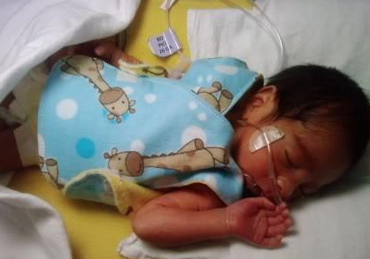
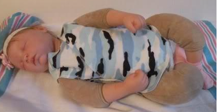

NICU Smock Pattern
Everything Your Mama Made & More!
- 
- 
Materials:
Cotton Flannel
Thread that is approriate for cloth
>Basic Sewing Supplies or Machine
Velcro that can be sewn on or Plastic Snaps (please do not use any form of a metal fastener)
NOTE: 1/3 yard needed for a single layer smock, a reversable smock will need 2/3 yard
Instructions:
This is a NICU friendly pattern that comes in 4 sizes to fit babies 1-11lbs. The 3-5lb Tiny Preemie is the most popular size & will fit a lot of 6lb babies as well. All seams are 1/4 inch seam allowances.\n\n\nPrep:\n\n Print off all 6 pattern pages… make sure your printer selects "scaling none" or "actual size" when printing & double check to make sure the 1” test square has printed properly. Then tape the pages together in order making sure the swirls line up. You will have 3 pieces & a pattern key.
Size Options:
Due to popular demand, I have recently modified my popular pattern to include not one, but 4 sizes of this NICU friendly smock because babies of all different sizes can use them! The size guide is approximate fit. Serged or bias tape edges will give you a slightly larger fit, turned & top stitched slightly smaller.
Pattern:
Then trace or cut out the size you would like to make & make sure to note which shape fastener markings are for the size you are making.
1 Layer Serger:
Cut one each of pieces A (on fold), B & C.
2 sets of sew on Velcro measuring 3/8” X 3/8” (one for each +, the soft sides on piece B or C & the rough sides on piece A) and optional package of
bias tape.
Step 1: Lay piece A right side up on your table & then put piece B right side down on top of it so the shoulder matches up & pin. Then lay piece C right side down matching it
up with the other shoulder & pin. Sew a ¼” seam on both shoulders attaching all 3 pieces.
Step 2: Finish raw edge with your serger OR apply bias tape all around the edge.
Step 3:
Sew on Velcro. You will sew the rougher sides to the WRONG side of piece A where the +'s are marked on the pattern piece. Then sew on the soft sides to piece B where the +'s are marked on the
pattern piece.
2 Layer Reversible Serged Smock:
Fabric 1… Cut one each of pieces A (on fold), B & C.
Fabric 2… Cut one each of pieces A (on fold), B & C.
4 sets of sew on Velcro measuring 3/8” X 3/8” (one for each +, the soft sides on piece
B or C & the rough sides on piece A) and optional package of bias tape.
Step 1: With fabric 1 lay piece A right side up on your table & then put piece B right side down on top of it so the
shoulder matches up & pin. Then lay piece C right side down matching it up with the other shoulder & pin. Sew a ¼” seam on both shoulders attaching all 3 pieces. Set aside & repeat with fabric 2.
Step 2: For sew & turn instructions skip to step 3. Put Fabric 1 right side DOWN on the table. With Fabric 2 right side UP lay it on top of fabric 1. Line them up & pin together! Finish raw
edge with your serger to attach the two OR sew with a narrow seam on your sewing machine to hold them together and then apply bias tape all around the edge. SKIP TO STEP 6
Step 3: To sew &
turn! Put Fabric 1 right side UP on the table. With Fabric 2 right side DOWN lay it on top of fabric 1. Line them up & pin together (you should not be able to see the right side of either fabric)!
Sew a ¼” seam all the way around it leaving a 2” unsewn section at the bottom center (the straight part) Clip your corners almost to theseam for a nicer finished look.
Step 4: Using your chopstick
or other turning aid now turn the smock right side out. Make sure to use the chopstick to get all your curves & corners nice so it is easy to topstitch! Take an iron to it to make your edges crisp &
easy to topstitch! Your opening should fold under ¼ inch nicely like shown… pin closed so you can topstitch it closed.
Step 5: Using a 1/8” seam allowance topstitch the entire outer edge. This will
look nice & keeping it from getting all wonky when being washed!
Step 6: Sew on the Velcro. You will sew the rougher sides to BOTH piece A's where the +'s are marked on the pattern piece. Then sew
on the soft sides to both piece B where the +'s are marked on the pattern piece. There is NO Velcro on piece C because that soft fabric is against the babies skin!\n